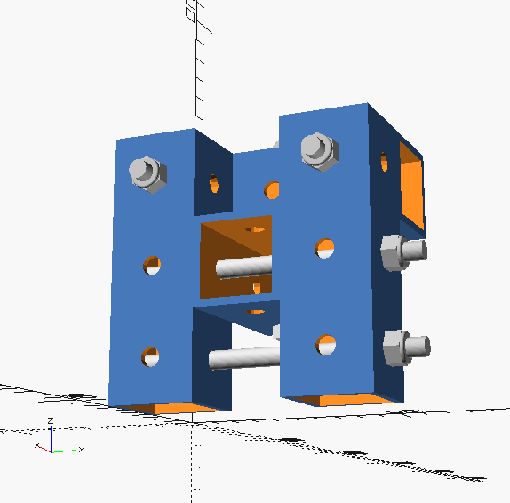
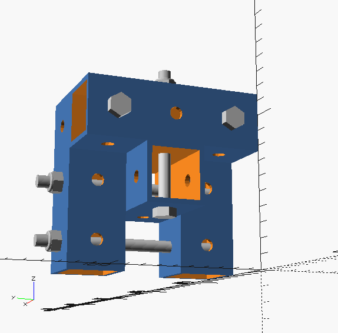

clevis fasteners
^ Techniques infobox ^^
| image | Mounting-shackle.scad.png |
| designers | [[user:tim|Timothy Schmidt]] |
| date | 2019 |
| vitamins | |
| materials | |
| transformations | |
| lifecycles | |
| tools | [[wrenches|Wrenches]] |
| parts | [[frames|Frames]], [[nuts|Nuts]], [[bolts|Bolts]], [[end_caps|End caps]] |
| techniques | [[tri_joints|Tri joints]] |
| git | |
| files | |
| suppliers | |
| reversible | true |
Introduction
A clevis fastener is a three-piece fastener system consisting of a clevis, clevis pin, and tang. The clevis is a U-shaped piece that has holes at the end of the prongs to accept the clevis pin. The clevis pin is similar to a bolt, but is either partially threaded or is unthreaded with a cross-hole for a split pin. The tang is a piece that fits in the space within the clevis and is held in place by the clevis pin. The combination of a simple clevis fitted with a pin is commonly called a shackle, although a clevis and pin is only one of the many forms a shackle may take.
Clevises are used in a wide variety of fasteners used in farming equipment and sailboat rigging, as well as the automotive, aircraft and construction industries. They are also widely used to attach control surfaces and other accessories to servo controls in airworthy model aircraft. As a part of a fastener, a clevis provides a method of allowing rotation in some axes while restricting rotation in others.
Challenges
Approaches

